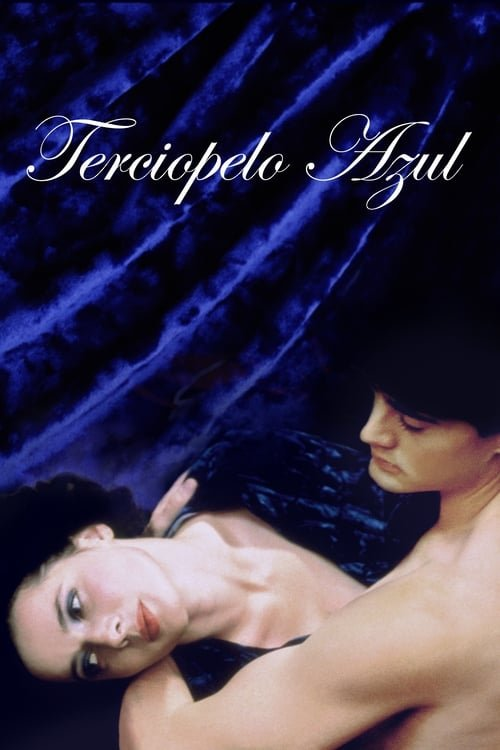

Terciopelo azul (1986)
Sinopsis Rápida
Un hallazgo macabro en un campo de fútbol americano desata una espiral de violencia y misterio en la aparentemente idílica Lumberton, llevando a un joven a un mundo de perversión y oscuridad que pondrá a prueba sus límites.
Sinopsis Detallada
Jeffery Beaumont, un estudiante universitario, descubre una oreja cortada en un campo. Su investigación lo lleva a la seductora Dorothy Vallens y al siniestro Frank Booth, un personaje enigmático y violento. La película explora la naturaleza del mal, la obsesión y el submundo oculto bajo la superficie de una comunidad aparentemente normal. David Lynch nos sumerge en una atmósfera opresiva y surrealista, llena de simbolismos y secuencias oníricas que dejan una profunda huella en el espectador. La trama gira alrededor de la búsqueda de la verdad y las consecuencias devastadoras de la curiosidad.
¿Por qué tenés que verla?
- Una experiencia cinematográfica inolvidable que te dejará sin aliento.
- La dirección magistral de David Lynch crea una atmósfera inquietante y única, con una banda sonora icónica de Isabella Rossellini.
- Su impacto en el cine es innegable, influenciando a directores y cineastas posteriores.
- Explora temas oscuros y complejos de una manera impactante y memorable.
Idea Extra
Análisis del simbolismo onírico en Terciopelo Azul: Descifrando los enigmas de David Lynch